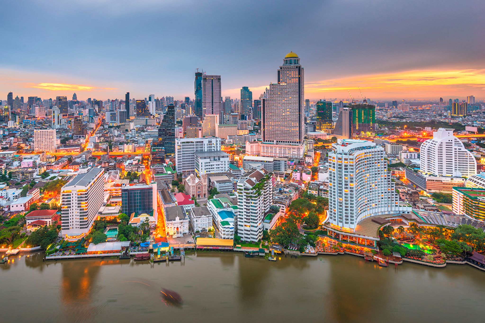
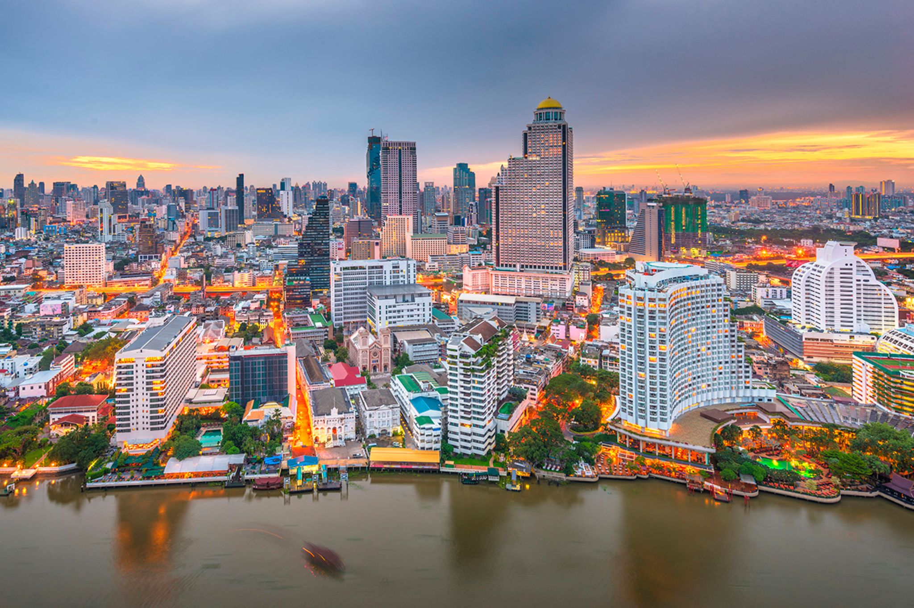
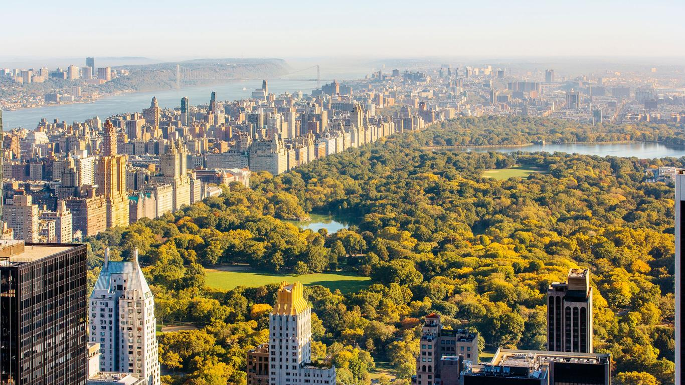
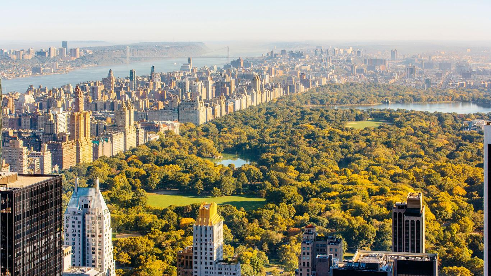
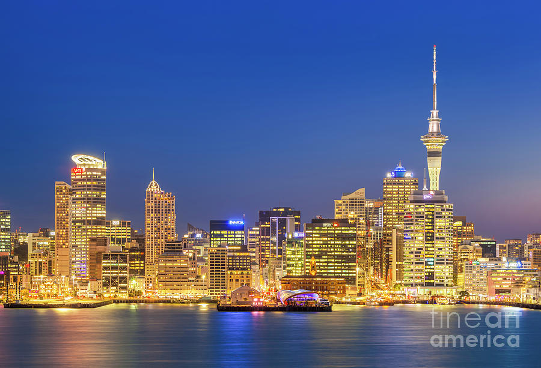
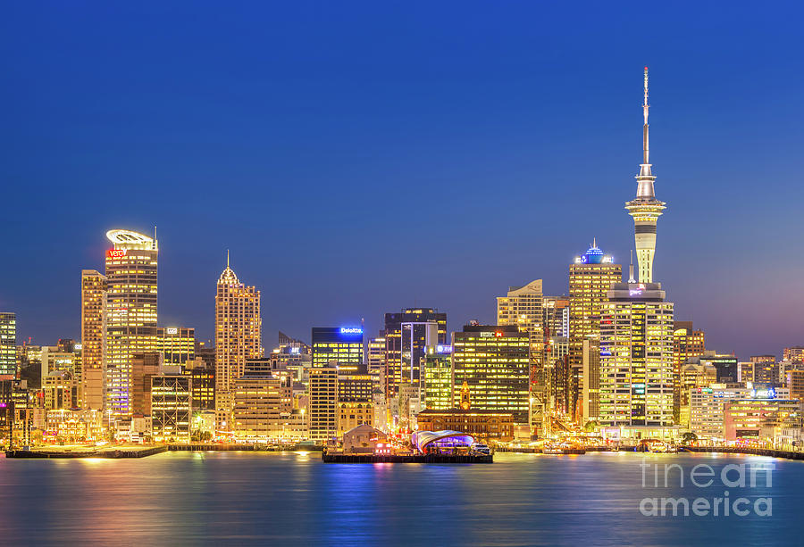

Seoul, a capital da Coreia do Sul, é uma metrópole vibrante que combina harmoniosamente a tradição e a modernidade. Com uma população de mais de 9 milhões de habitantes, é o centro econômico, cultural e político do país. A cidade é famosa por seus arranha-céus futuristas, como a Lotte World Tower, e por seus palácios históricos, como Gyeongbokgung e Changdeokgung, que refletem a rica herança dinástica da Coreia.

Bangkok, a capital da Tailândia, é uma cidade pulsante e eclética conhecida por sua energia vibrante e cultura rica. Com mais de 8 milhões de habitantes, é o centro econômico e cultural do país. Bangkok é famosa por seus templos ornamentados, como Wat Arun e Wat Phra Kaew, que abrigam o sagrado Buda de Esmeralda. A cidade também é reconhecida por sua vida noturna animada, mercados flutuantes e uma gastronomia de rua diversificada que atrai visitantes do mundo inteiro. Além disso, Bangkok mistura modernidade e tradição com seus arranha-céus imponentes, centros comerciais sofisticados e bairros históricos que oferecem uma visão autêntica da vida tailandesa.
 

Nova York, frequentemente chamada de "a cidade que nunca dorme", é um epicentro global de cultura, economia e arte. Com uma população diversificada de mais de 8 milhões de habitantes, é a cidade mais populosa dos Estados Unidos. Nova York é conhecida por seus marcos icônicos, como a Estátua da Liberdade, o Central Park e o Empire State Building. A cidade é um mosaico de bairros distintos, cada um com sua própria identidade e charme, desde a agitação de Manhattan até o multiculturalismo do Brooklyn. Além disso, Nova York é um importante centro financeiro, sediando a Bolsa de Valores de Nova York, e um polo cultural, abrigando teatros da Broadway, museus renomados como o Metropolitan Museum of Art, e uma cena gastronômica que reflete sua rica tapeçaria cultural.
 

Auckland, a maior cidade da Nova Zelândia, é um vibrante centro urbano que combina a beleza natural com uma atmosfera cosmopolita. Situada entre dois portos, a cidade é conhecida como a "Cidade das Velas" devido à sua paixão pela vela e pela vida marítima. Com uma população de cerca de 1,7 milhão de habitantes, Auckland é um caldeirão cultural que reflete a diversidade étnica da Nova Zelândia. A cidade oferece uma mistura dinâmica de atividades, desde suas praias deslumbrantes e trilhas naturais nos arredores vulcânicos, até seus sofisticados museus, galerias de arte e uma cena culinária variada. Além disso, Auckland é um importante centro econômico do país, com uma economia robusta e uma qualidade de vida altamente apreciada.
 
